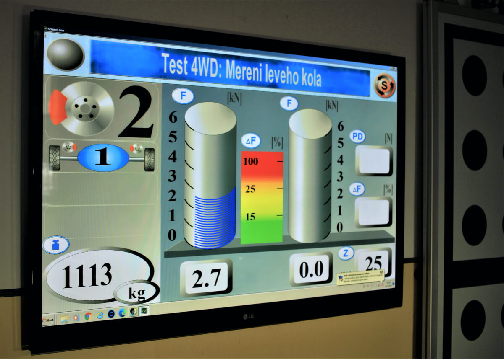

Diagnostika brzd a podvozku
Profesionální kontrola brzdových systémů, tlumičů a zavěšení kol
Správná funkce brzd a podvozku je zásadní pro bezpečnost, stabilitu a ovladatelnost vozidla. Některé závady se při běžné jízdě nemusí výrazně projevovat a nelze je spolehlivě odhalit pouze vizuální kontrolou.
V J&S SERVIS ve Statenicích u Prahy provádíme odbornou diagnostiku na zkušební lince BEISSBARTH s válcovou zkušebnou brzd VAS 6360, testerem tlumičů pérování a hydraulickým třasadlem pro kontrolu vůlí v zavěšení kol.

Měření brzdných sil – BEISSBARTH VAS 6360
Válcová zkušebna brzd umožňuje měřit brzdné síly jednotlivých kol a vyhodnotit rozdíly mezi levou a pravou stranou nápravy.
Rozsah kontroly brzd
- Měření brzdných sil jednotlivých kol.
- Vyhodnocení souměrnosti brzdného účinku na nápravě.
- Kontrola účinku provozní a parkovací brzdy.
- Posouzení průběhu brzdných sil a zjištění nerovnoměrného nebo nestabilního brzdného účinku.
Zjištěné odchylky mohou upozornit na závady brzdových mechanismů, jejich ovládání nebo dalších součástí systému. Naměřené hodnoty vyhodnocujeme a podle potřeby doplňujeme mechanickou kontrolou k určení příčiny závady.
Diagnostika tlumičů pérování
Funkční odpružení pomáhá udržovat kontakt pneumatik s vozovkou a ovlivňuje stabilitu, ovladatelnost i chování vozidla při brzdění.
Testerem tlumičů posuzujeme odezvu odpružení při zkušebním buzení a porovnáváme výsledky levé a pravé strany nápravy. Zkouška pomáhá odhalit rozdíly mezi koly a podezření na nedostatečnou funkci odpružení; poskytuje také podklady pro následnou mechanickou kontrolu.
Výsledky posuzujeme s ohledem na konstrukci podvozku, stav a tlak pneumatik i zatížení vozidla. Samotné měření neurčuje přesnou míru opotřebení ani zbývající životnost tlumiče.

Kontrola vůlí v zavěšení kol a náprav
Hydraulické třasadlo řízeným pohybem zatěžuje zavěšení kol a umožňuje sledovat nadměrné vůle v mechanických součástech.
Kontrolované součásti podvozku
- Kulové čepy a spojovací prvky zavěšení kol.
- Silentbloky ramen a jejich uložení.
- Čepy řízení a mechanické části řízení.
- Uložení stabilizátoru a spojovací tyče.
- Další součásti náprav z hlediska vůlí a mechanického poškození.
Kontrola pomáhá odhalit závady spojené s klepáním, nestabilitou vozidla, nepřesným řízením nebo nerovnoměrným opotřebením pneumatik.
Odborné vyhodnocení a návaznost na 3D geometrii
Naměřené hodnoty a zjištěné mechanické nedostatky vyhodnocujeme v souvislosti s projevy závady a technickým stavem vozidla. Na základě výsledků doporučíme další kontrolu nebo opravu.
Závady zavěšení kol je nutné před přesným seřízením geometrie odstranit. Podle charakteru opravy může následovat kontrola a seřízení 3D geometrie náprav podle technických údajů výrobce vozidla.
Kdy doporučujeme diagnostiku brzd a podvozku?
Odbornou kontrolu doporučujeme při nerovnoměrném brzdění, nestabilitě vozidla, klepání v podvozku, zhoršené ovladatelnosti nebo nepravidelném opotřebení pneumatik. Vhodná je také při ověřování technického stavu ojetého vozidla a po opravách brzdových či podvozkových součástí.
Diagnostika na zkušební lince je samostatně účtovanou službou. Konkrétní rozsah kontroly stanovujeme podle technického stavu vozidla a požadovaných úkonů.
Před objednáním
Při objednání popište, zda se potíž projevuje při brzdění, na nerovnostech nebo při určité rychlosti. Uveďte také případnou nedávnou opravu podvozku a jaká kola jsou na voze namontovaná.